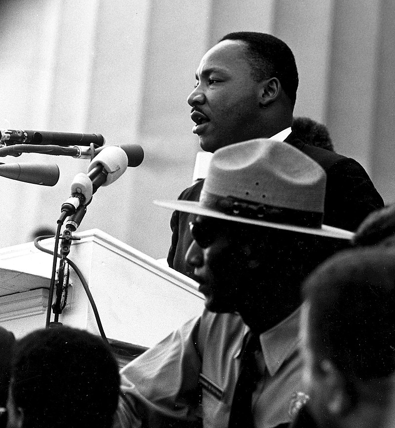

Le discours de Martin Luther King Jr.
"I have a dream"

Des centaines de milliers d'Américains, en grande majorité de race
noire, participent à une marche à Washington afin de réclamer des
autorités politiques la reconnaissance de leurs droits civiques. Un
des leaders du mouvement, le pasteur Martin Luther King jr., prononce
alors un vibrant discours qui restera gravé dans les mémoires.
Au cours des années 50 et 60, la contestation contre les politiques
ségrégationnistes encore en vigueur dans plusieurs États américains
devient de plus en plus active. De nombreuses manifestations
non-violentes sont organisées, dont une, le 28 août 1963, qui attire
environ 250 000 personnes dans la capitale du pays, Washington. Même
si la majorité des participants sont des Africains-Américains, des
gens de race blanche prennent également part à la marche dont quelques
dizaines de membres du Congrès ainsi que des personnalités du monde
artistique (Paul Newman, Marlon Brando, etc.) Une des figures de proue
du mouvement, le pasteur noir Martin Luther King jr., prononce devant
le monument Lincoln un vibrant discours (« I Have a Dream ») qui fera
époque. Avec d'autres leaders noirs, il rencontre ensuite le président
John F. Kennedy. Ce dernier décédera en novembre 1963, mais son
successeur, Lyndon B. Johnson, fera adopter en 1964 le « Civil Rights
Act » rendant la ségrégation illégale. L'action de King lui méritera
le prix Nobel de la Paix en 1964.